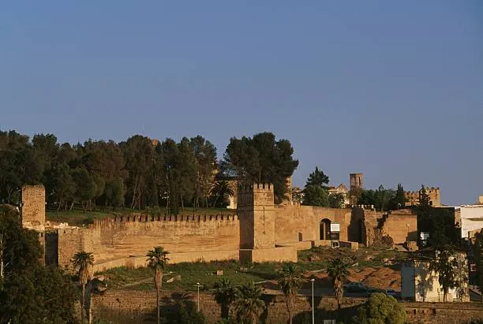
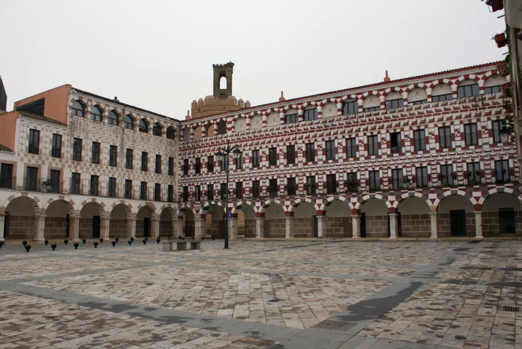
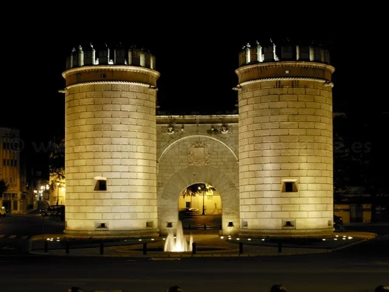
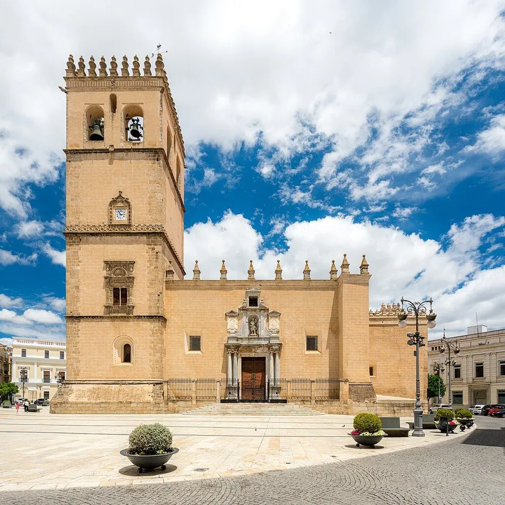

Badajoz al igual que muchas otras ciudades de España siguen guardando a dia de hoy
momumentos y trozos de historia que nos recuerda como se vivia hace muchos años y como
ha evolucionado la historia pacense en este caso.
Monumentos Imprescindibles
La Alcazaba Almohade
Es la alcazaba más grande de Europa y una de las mejor conservadas.
Ofrece un paseo por sus murallas con vistas panorámicas al río Guadiana.
Debido a malas politicas de conservación, gran parte de las murallas fueron destruidas.

Fotografía alcazaba almohade de Badajoz
La Plaza Alta
Famosa por sus arcos y su decoración geométrica. Es el corazón del casco antiguo y el lugar más emblemático para tomar algo y disfrutar del ambiente.
Cerca de esta plaza podemos encontrarnos un local conocido como "Rincon Nazari" que mantiene una estética árabe

Fotografía de la Plaza Alta de Badajoz
Puerta de Palmas
Las dos torres gemelas que daban entrada a la ciudad frente al Puente de Palmas. Es el símbolo por excelencia de Badajoz.

Fotografía de la Plaza Alta de Badajoz
Catedral de San Juan Bautista
Situada en la Plaza de España, destaca por su aspecto exterior de fortaleza y su precioso claustro e interior gótico.

Fotografía de la catedral de Badajoz